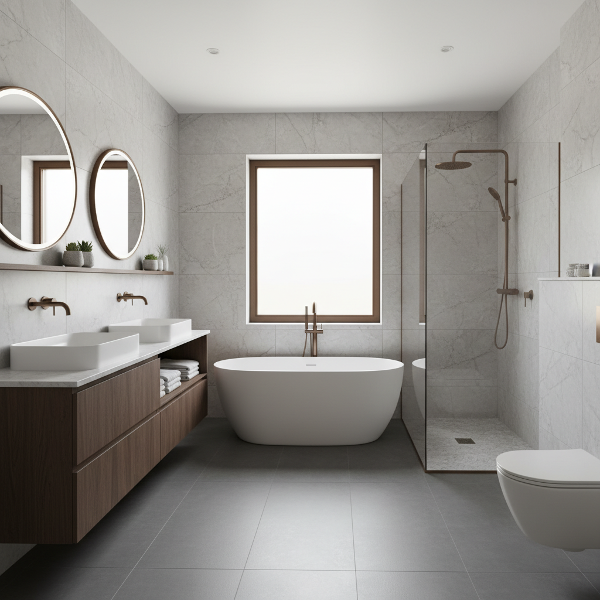

Ihr SHK-Spezialist für Berlin Prenzlauer Berg, Pankow & Weißensee
Verlässliche Wärme und moderne Bäder – Ohne Stress, ohne Schmutz.
Wir sind Ihr familiengeführter Meisterbetrieb für Heizungsmodernisierung und Badsanierung im Berliner Altbau. Wir garantieren: Verbindliche Termine, transparente Pauschalpreise und eine Baustelle, die sauberer ist, als Sie sie verlassen haben.
- Spezialisiert auf Altbau-Hydraulik
- Komplettbäder aus einer Hand
- 24h-Notdienst für Bestandskunden

Die drei Säulen Ihrer Zufriedenheit: Verlässlichkeit, Transparenz, Sauberkeit
Wir wissen, was Sie von Handwerkern erwarten – und was Sie frustriert. Deshalb haben wir unsere Prozesse radikal auf Ihre Bedürfnisse als Eigentümer:in oder Hausverwaltung im Berliner Altbau ausgerichtet.
Verbindliche Termintreue
Kein Warten, kein Rätselraten
Wir arbeiten mit klaren Zeitfenstern und garantieren, dass wir pünktlich erscheinen. Sollte sich wider Erwarten etwas ändern, informieren wir Sie proaktiv – nicht erst, wenn Sie anrufen.
Transparente Kostenstruktur
Pauschalpreise statt böser Überraschungen
Für Standardleistungen erhalten Sie von uns klare Pauschalangebote. Bei komplexen Projekten (z.B. Heizungsmodernisierung) klären wir alle Kostenpunkte offen und ehrlich, bevor wir starten.
Zertifizierte Sauberkeit
Ihre Wohnung bleibt Ihr Zuhause
Wir nutzen Staubschutzwände, legen Abdeckungen aus und verlassen die Baustelle besenrein. Ihre Immobilie im Prenzlauer Berg behandeln wir mit dem gleichen Respekt wie unsere eigene. Das ist unser Versprechen.
Ihr Spezialist für Heizung und Bad im Berliner Altbau
Ob eine effiziente Heizungsanlage, die die Altbau-Hydraulik versteht, oder ein modernes, barrierefreies Bad: Wir liefern Qualität, die Bestand hat.
Heizungsmodernisierung & Effizienz
Wärme, die ankommt.
Wir machen Ihre Heizung fit für die Zukunft. Unser Fokus liegt auf der Optimierung bestehender Systeme, dem Austausch alter Gasthermen und der Durchführung des komplexen hydraulischen Abgleichs – gerade im Altbau entscheidend für gleichmäßige Wärme.
- Hydraulischer Abgleich nach DIN-Standard
- Austausch von Gasthermen und Kesseln
- Beratung zu Fördermöglichkeiten (KfW, BAFA)
Komplette Badsanierung
Ihr Traumbad aus einer Hand.
Von der ersten Skizze bis zur finalen Fliese: Wir koordinieren alle Gewerke (Fliesenleger, Elektriker, Maler) für Ihr neues Bad. Sie haben nur einen Ansprechpartner und die Garantie für eine termingerechte und saubere Fertigstellung.
- Koordination aller Gewerke
- Barrierefreie und altersgerechte Lösungen
- Hochwertige Markenarmaturen und Keramik
Vier Schritte zu Ihrer Lösung – Transparent und planbar
Wir strukturieren jedes Projekt klar, damit Sie jederzeit wissen, wo wir stehen und was als Nächstes passiert.
Einfache Anfrage & Erstgespräch
Sie kontaktieren uns per Telefon oder Formular. Wir besprechen kurz Ihr Anliegen (Heizungsausfall, Badwunsch) und vereinbaren einen verbindlichen Besichtigungstermin in Berlin, Pankow oder Weißensee.
Präzise Planung & Pauschalangebot
Nach der Bestandsaufnahme erhalten Sie ein detailliertes, transparentes Angebot. Bei uns gibt es keine versteckten Kosten. Wir klären alle Details, bevor der erste Handgriff getan wird.
Saubere Ausführung & Montage
Unsere Monteure erscheinen pünktlich, richten Staubschutzwände ein und führen die Arbeiten präzise durch. Wir halten die vereinbarte Zeit ein und minimieren die Beeinträchtigung Ihres Alltags.
Abnahme & Langfristige Betreuung
Nach der erfolgreichen Abnahme sind wir weiterhin für Sie da. Ob jährliche Wartung Ihrer Gastherme oder Notdienst – wir sorgen für langfristige Verlässlichkeit Ihrer Anlagen.
Heizungsausfall? Unser Notdienst hilft schnell.
Ein kalter Wintertag in Berlin duldet keinen Aufschub. Für unsere Bestandskunden garantieren wir schnelle Reaktionszeiten im Notfall. Rufen Sie uns direkt an.
Notrufnummer: +49 30 1234567Vertrauen, das seit 15 Jahren wächst
Wir sind stolz auf unsere langjährigen Kundenbeziehungen in Prenzlauer Berg. Hier einige Stimmen zur Qualität und Zuverlässigkeit unserer Arbeit.
"Nachdem drei andere Firmen abgesagt hatten, hat Schneider Wärme & Wasser unsere komplexe Altbau-Hydraulik in den Griff bekommen. Endlich gleichmäßige Wärme in allen Räumen. Termine wurden 1:1 eingehalten."
"Die Komplettsanierung unseres kleinen Praxisbades lief reibungslos. Besonders beeindruckend war der Staubschutz – die Praxis konnte fast normal weiterlaufen. Sehr professionell und unkompliziert."
"Von der Wartung bis zur neuen Gastherme: Immer schnelle, transparente Angebote. Man merkt, dass hier noch Wert auf ehrliche Beratung und langfristige Partnerschaft gelegt wird."
Anna Schneider und das Team: Qualität aus Familientradition
Wir sind ein familiengeführter Betrieb, der sich der Qualität und dem persönlichen Service verpflichtet fühlt. Wir arbeiten nicht für schnelle Aufträge, sondern für langfristige Zufriedenheit im Kiez.
Anna Schneider
Geschäftsführung & Meisterin SHK
Als Inhaberin stehe ich persönlich für die Verlässlichkeit und Sauberkeit jedes Projekts. Mein Anspruch ist es, die oft problematische Handwerker-Erfahrung in Berlin positiv zu verändern.
Ihre Fragen, unsere transparenten Antworten
Welche Regionen bedienen Sie genau?
Unser Kerngebiet ist Berlin Prenzlauer Berg, Pankow und Weißensee. Wir konzentrieren uns bewusst auf diese Bezirke, um schnelle Reaktionszeiten und eine hohe Servicequalität gewährleisten zu können.
Wie lange dauert eine Badsanierung im Altbau?
Eine Komplettsanierung dauert in der Regel 3 bis 4 Wochen, abhängig von der Größe und Komplexität. Wir erstellen einen verbindlichen Zeitplan, den wir durch unsere Koordination der Gewerke exakt einhalten.
Bieten Sie auch Pauschalpreise an?
Ja, für viele Standardleistungen wie den Austausch einer Gastherme oder bestimmte Wartungsarbeiten bieten wir Pauschalpreise an. Das schafft maximale Transparenz und Planungssicherheit für Sie.
Wie gehen Sie mit Staub und Schmutz um?
Sauberkeit ist unser Markenzeichen. Wir nutzen professionelle Luftreiniger, Staubschutzwände und legen alle Laufwege sorgfältig ab. Am Ende des Tages wird die Baustelle gereinigt übergeben.
Sprechen wir über Ihr Projekt
Ob akute Wartung oder geplante Modernisierung: Nehmen Sie Kontakt auf. Wir freuen uns darauf, Ihnen die Verlässlichkeit zu bieten, die Sie von einem Meisterbetrieb erwarten.
Kontaktinformationen
- Telefon: +49 30 1234567
- E-Mail: info@schneider-waerme-wasser.de
- Adresse: Prenzlauer Allee 123, 10409 Berlin
- Öffnungszeiten: Mo – Fr: 7:30 – 16:30 Uhr